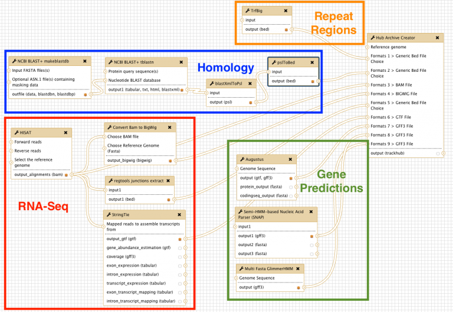

2.4.1. Workflows¶
2.4.1.1. Big picture¶
We have developed a comprehensive Galaxy workflow that produces multiple complementary datasets to facilitate the annotation of any eukaryotic genome. The entire workflow is shown below.
2.4.1.2. Sub-workflows¶
The G-OnRamp workflow is divided into four sub-workflows: homology, repeat regions, RNA-Seq, and gene predictions. These sub-workflows will produce the input datasets for the Hub Archive Creator, which will create the UCSC Genome Browser Assembly Hub.
2.4.1.2.1. Homology¶
The genome assembly (in FASTA format) is the input dataset for the NCBI BLAST+ tool makeblastdb, which creates a nucleotide database for BLAST searches. The NCBI BLAST+ tblastn tool searches this nucleotide database against a collection of protein query sequences from an informant species. The blastXmlToPsl and pslToBed tools are used to convert the tblastn search results to the BED format required by the Hub Archive Creator.
2.4.1.2.2. Repeat regions¶
TrfBig partitions the genome assembly into smaller chunks and then runs Tandem Repeats Finder (TRF) on each chunk to identify tandem repeats within each genomic region. Note that the output of TRF is in BED4+12 format.
2.4.1.2.3. RNA-seq¶
RNA-Seq reads are mapped against the genome assembly by HISAT2, and StringTie assembles the mapped RNA-Seq reads into potential transcripts. The “junctions extract” subprogram in Regtools reports the locations of putative introns based on the spliced RNA-Seq reads in the BAM file. The RNA-Seq read coverage track was created by the “Convert BAM to BigWig” tool.
2.4.1.2.4. Gene predictions¶
Gene models from three gene predictors (Augustus, GlimmerHMM, and SNAP) were produced using species-specific parameters if they were available. The gene prediction results are converted into the bigGenePred format by the Hub Archive Creator.